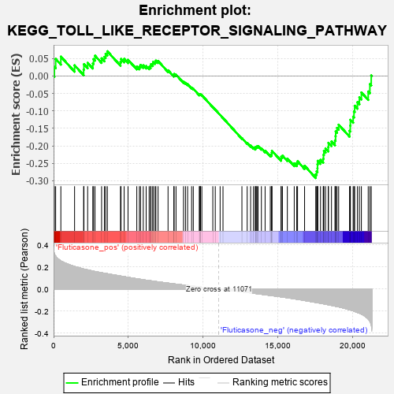
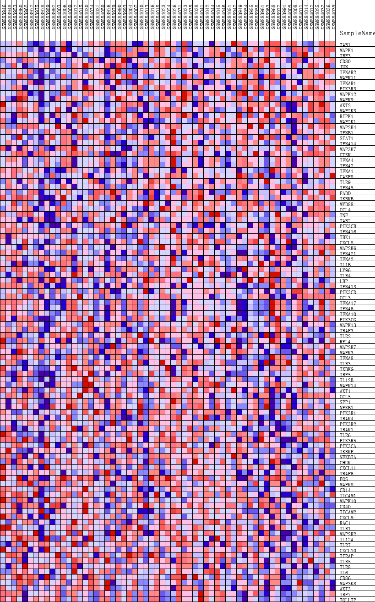
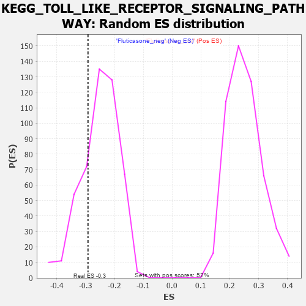

| | | Dataset | GSEA_expr_Flu.GSEA_timepoint.cls#Fluticasone |
| Phenotype | GSEA_timepoint.cls#Fluticasone |
| Upregulated in class | Fluticasone_neg |
| GeneSet | KEGG_TOLL_LIKE_RECEPTOR_SIGNALING_PATHWAY |
| Enrichment Score (ES) | -0.29206598 |
| Normalized Enrichment Score (NES) | -1.1673532 |
| Nominal p-value | 0.23492724 |
| FDR q-value | 1.0 |
| FWER p-Value | 0.961 |
Table: GSEA Results Summary

Fig 1: Enrichment plot: KEGG_TOLL_LIKE_RECEPTOR_SIGNALING_PATHWAY
Profile of the Running ES Score & Positions of GeneSet Members on the Rank Ordered List
| PROBE | DESCRIPTION
(from dataset) | GENE SYMBOL | GENE_TITLE | RANK IN GENE LIST | RANK METRIC SCORE | RUNNING ES | CORE ENRICHMENT | | 1 | TAB1 | NA | | | 53 | 0.319 | 0.0261 | No |
| 2 | MAPK1 | NA | | | 138 | 0.300 | 0.0491 | No |
| 3 | IRF3 | NA | | | 487 | 0.255 | 0.0556 | No |
| 4 | CD80 | NA | | | 1406 | 0.205 | 0.0307 | No |
| 5 | JUN | NA | | | 2012 | 0.182 | 0.0185 | No |
| 6 | IFNAR2 | NA | | | 2032 | 0.181 | 0.0339 | No |
| 7 | MAPK11 | NA | | | 2281 | 0.174 | 0.0378 | No |
| 8 | IFNAR1 | NA | | | 2627 | 0.163 | 0.0362 | No |
| 9 | PIK3R3 | NA | | | 2676 | 0.162 | 0.0485 | No |
| 10 | MAPK12 | NA | | | 2774 | 0.159 | 0.0582 | No |
| 11 | MAPK9 | NA | | | 3215 | 0.148 | 0.0507 | No |
| 12 | AKT2 | NA | | | 3402 | 0.144 | 0.0549 | No |
| 13 | MAP2K3 | NA | | | 3484 | 0.142 | 0.0638 | No |
| 14 | RIPK1 | NA | | | 3599 | 0.139 | 0.0709 | No |
| 15 | MAP2K1 | NA | | | 4480 | 0.118 | 0.0400 | No |
| 16 | MAP2K4 | NA | | | 4517 | 0.118 | 0.0489 | No |
| 17 | IFNB1 | NA | | | 4726 | 0.113 | 0.0492 | No |
| 18 | STAT1 | NA | | | 4985 | 0.106 | 0.0465 | No |
| 19 | IFNA14 | NA | | | 5572 | 0.094 | 0.0273 | No |
| 20 | MAP3K7 | NA | | | 5747 | 0.090 | 0.0272 | No |
| 21 | CTSK | NA | | | 5818 | 0.089 | 0.0318 | No |
| 22 | IFNA4 | NA | | | 6005 | 0.084 | 0.0306 | No |
| 23 | IFNA7 | NA | | | 6198 | 0.080 | 0.0288 | No |
| 24 | IFNA1 | NA | | | 6398 | 0.077 | 0.0263 | No |
| 25 | CASP8 | NA | | | 6494 | 0.075 | 0.0285 | No |
| 26 | TLR9 | NA | | | 6521 | 0.075 | 0.0340 | No |
| 27 | IFNA5 | NA | | | 6642 | 0.072 | 0.0349 | No |
| 28 | FADD | NA | | | 6663 | 0.072 | 0.0404 | No |
| 29 | IKBKB | NA | | | 6792 | 0.069 | 0.0406 | No |
| 30 | MYD88 | NA | | | 6849 | 0.068 | 0.0441 | No |
| 31 | CCL4 | NA | | | 6996 | 0.065 | 0.0431 | No |
| 32 | TNF | NA | | | 7664 | 0.054 | 0.0165 | No |
| 33 | TAB2 | NA | | | 8052 | 0.047 | 0.0024 | No |
| 34 | PIK3CB | NA | | | 8070 | 0.047 | 0.0059 | No |
| 35 | IFNA16 | NA | | | 8199 | 0.045 | 0.0038 | No |
| 36 | TBK1 | NA | | | 8699 | 0.037 | -0.0164 | No |
| 37 | CXCL8 | NA | | | 8830 | 0.035 | -0.0194 | No |
| 38 | MAP2K6 | NA | | | 8973 | 0.032 | -0.0232 | No |
| 39 | IFNA21 | NA | | | 9243 | 0.028 | -0.0334 | No |
| 40 | IFNA2 | NA | | | 9355 | 0.026 | -0.0363 | No |
| 41 | IL1B | NA | | | 9762 | 0.019 | -0.0537 | No |
| 42 | LY96 | NA | | | 9774 | 0.019 | -0.0525 | No |
| 43 | TLR4 | NA | | | 9823 | 0.018 | -0.0531 | No |
| 44 | LBP | NA | | | 9838 | 0.018 | -0.0522 | No |
| 45 | IFNA13 | NA | | | 9927 | 0.017 | -0.0548 | No |
| 46 | PIK3CD | NA | | | 10661 | 0.006 | -0.0888 | No |
| 47 | CCL3 | NA | | | 10826 | 0.003 | -0.0962 | No |
| 48 | IFNA17 | NA | | | 11150 | -0.001 | -0.1114 | No |
| 49 | IFNA6 | NA | | | 11344 | -0.004 | -0.1201 | No |
| 50 | IFNA10 | NA | | | 12611 | -0.024 | -0.1776 | No |
| 51 | PIK3CG | NA | | | 12963 | -0.031 | -0.1914 | No |
| 52 | MAPK13 | NA | | | 13193 | -0.034 | -0.1991 | No |
| 53 | TRAF3 | NA | | | 13386 | -0.038 | -0.2048 | No |
| 54 | TLR2 | NA | | | 13511 | -0.040 | -0.2071 | No |
| 55 | RELA | NA | | | 13513 | -0.040 | -0.2035 | No |
| 56 | MAP2K7 | NA | | | 13571 | -0.041 | -0.2025 | No |
| 57 | MAPK3 | NA | | | 13622 | -0.042 | -0.2011 | No |
| 58 | IFNA8 | NA | | | 13693 | -0.043 | -0.2006 | No |
| 59 | TLR3 | NA | | | 13915 | -0.047 | -0.2068 | No |
| 60 | IKBKG | NA | | | 14163 | -0.051 | -0.2138 | No |
| 61 | IRF5 | NA | | | 14512 | -0.058 | -0.2251 | No |
| 62 | IL12B | NA | | | 14599 | -0.059 | -0.2238 | No |
| 63 | MAPK14 | NA | | | 14608 | -0.059 | -0.2189 | No |
| 64 | AKT1 | NA | | | 14620 | -0.060 | -0.2140 | No |
| 65 | CCL5 | NA | | | 15229 | -0.070 | -0.2364 | No |
| 66 | SPP1 | NA | | | 15247 | -0.071 | -0.2309 | No |
| 67 | NFKB1 | NA | | | 15324 | -0.072 | -0.2280 | No |
| 68 | PIK3R1 | NA | | | 15652 | -0.079 | -0.2363 | No |
| 69 | IRAK4 | NA | | | 16113 | -0.088 | -0.2501 | No |
| 70 | PIK3R2 | NA | | | 16280 | -0.092 | -0.2497 | No |
| 71 | IRAK1 | NA | | | 16336 | -0.093 | -0.2440 | No |
| 72 | TLR6 | NA | | | 16806 | -0.103 | -0.2568 | No |
| 73 | PIK3R5 | NA | | | 17555 | -0.121 | -0.2812 | Yes |
| 74 | PIK3CA | NA | | | 17611 | -0.123 | -0.2728 | Yes |
| 75 | IKBKE | NA | | | 17667 | -0.124 | -0.2642 | Yes |
| 76 | NFKBIA | NA | | | 17672 | -0.124 | -0.2533 | Yes |
| 77 | CHUK | NA | | | 17684 | -0.124 | -0.2427 | Yes |
| 78 | CXCL11 | NA | | | 17873 | -0.128 | -0.2400 | Yes |
| 79 | TRAF6 | NA | | | 18055 | -0.133 | -0.2366 | Yes |
| 80 | FOS | NA | | | 18072 | -0.133 | -0.2254 | Yes |
| 81 | MAPK8 | NA | | | 18100 | -0.134 | -0.2146 | Yes |
| 82 | CD14 | NA | | | 18209 | -0.137 | -0.2074 | Yes |
| 83 | TICAM1 | NA | | | 18392 | -0.142 | -0.2033 | Yes |
| 84 | MAPK10 | NA | | | 18405 | -0.142 | -0.1911 | Yes |
| 85 | CD40 | NA | | | 18608 | -0.148 | -0.1873 | Yes |
| 86 | TICAM2 | NA | | | 18841 | -0.155 | -0.1844 | Yes |
| 87 | CXCL9 | NA | | | 18880 | -0.156 | -0.1722 | Yes |
| 88 | RAC1 | NA | | | 18889 | -0.156 | -0.1586 | Yes |
| 89 | TLR1 | NA | | | 18977 | -0.158 | -0.1485 | Yes |
| 90 | MAP2K2 | NA | | | 19088 | -0.161 | -0.1392 | Yes |
| 91 | IL12A | NA | | | 19818 | -0.187 | -0.1568 | Yes |
| 92 | TLR7 | NA | | | 19865 | -0.189 | -0.1420 | Yes |
| 93 | CXCL10 | NA | | | 19873 | -0.189 | -0.1253 | Yes |
| 94 | TIRAP | NA | | | 20058 | -0.197 | -0.1163 | Yes |
| 95 | TLR5 | NA | | | 20113 | -0.200 | -0.1009 | Yes |
| 96 | TLR8 | NA | | | 20161 | -0.202 | -0.0850 | Yes |
| 97 | IL6 | NA | | | 20346 | -0.212 | -0.0746 | Yes |
| 98 | CD86 | NA | | | 20476 | -0.219 | -0.0611 | Yes |
| 99 | MAP3K8 | NA | | | 20609 | -0.227 | -0.0470 | Yes |
| 100 | AKT3 | NA | | | 21067 | -0.271 | -0.0442 | Yes |
| 101 | IRF7 | NA | | | 21178 | -0.294 | -0.0230 | Yes |
| 102 | TOLLIP | NA | | | 21269 | -0.323 | 0.0017 | Yes |
Table: GSEA details [plain text format]

Fig 2: KEGG_TOLL_LIKE_RECEPTOR_SIGNALING_PATHWAY
Blue-Pink O' Gram in the Space of the Analyzed GeneSet

Fig 3: KEGG_TOLL_LIKE_RECEPTOR_SIGNALING_PATHWAY: Random ES distribution
Gene set null distribution of ES for KEGG_TOLL_LIKE_RECEPTOR_SIGNALING_PATHWAY